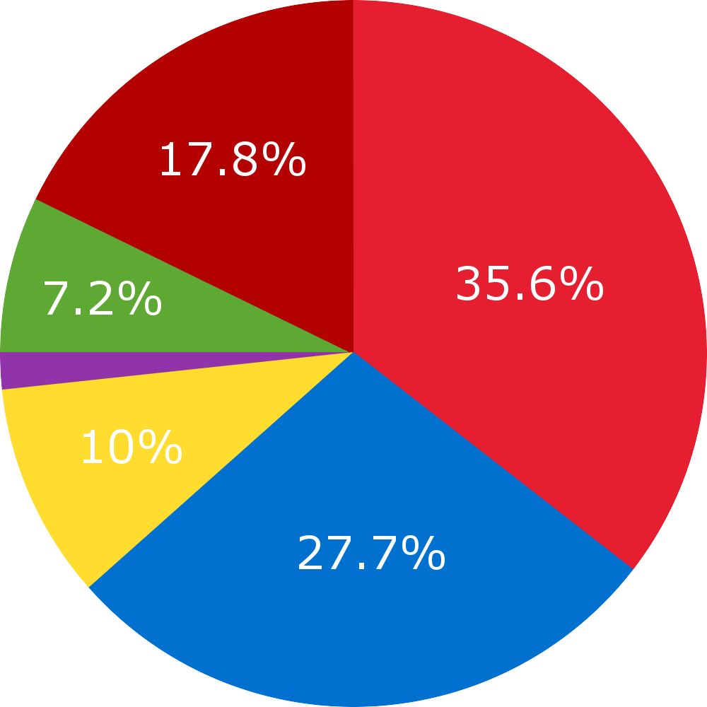

Notice: Due to shark tornadoes, the Red Line will be closed until further notice. 3/30/2016
5:55 pm 3/30/2016 10 min delay: Green Line toward Heath Street.
8:15 am 3/29/2016 5 min delay: Red Line toward Alewife.
Notice: There will be free cupcakes on all Red Line trains between 10 am to 3 pm. Happy Holidays! 12/22/2015
Reviews
- I hate this bus!
- The red line is awesome!
- Why is Charles MGH T stop always so crowded?
Statistics
Ridership Percentage
